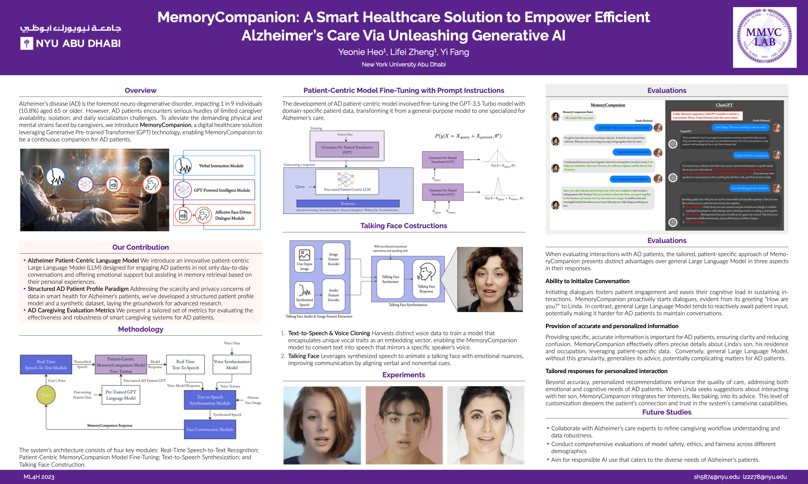
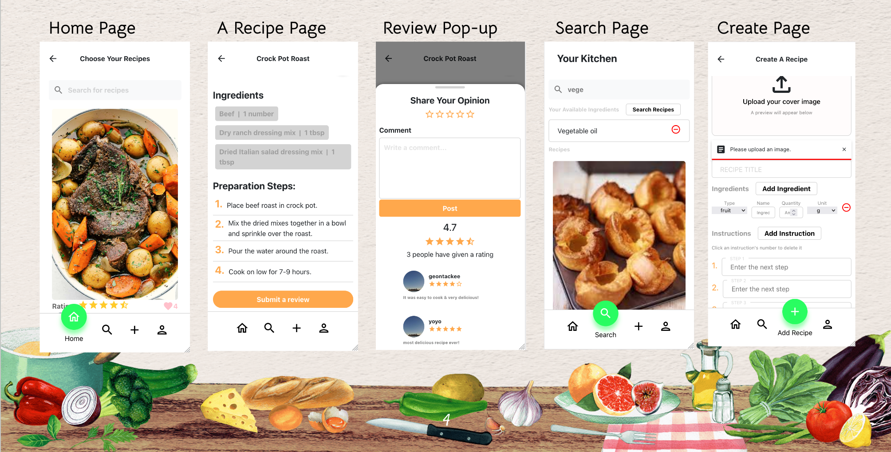
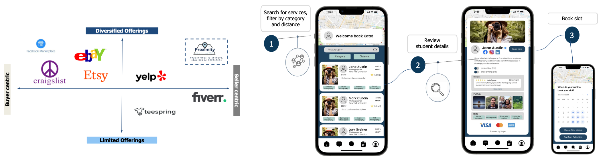
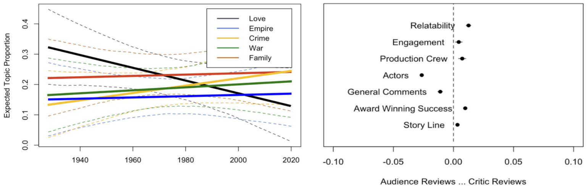
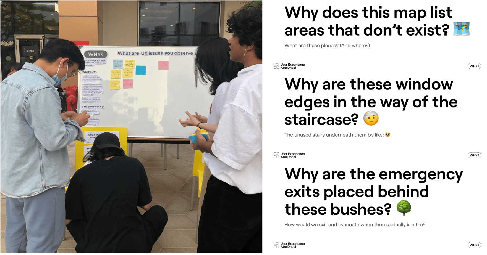

Click on a project in the left sidebar for more details!
MemoryCompanion
April 2023 - December 2023
#Finetune GPT #Prompt Engineering #ML4H Conference
A published research project that builds a cutting-edge digital health tool designed to enhance care for Alzheimer's disease (AD) patients using generative AI, specifically through GPT technology. The system personalizes interactions using voice cloning and talking-face mechanisms, making communication feel more familiar and human-like for patients. This aims to alleviate social isolation and improve cognitive function and daily communication for AD patients, addressing both caregiving needs and technological challenges in this domain.
MemoryCompanion is built into 4 modules:- Real Time Speech-to-Text Module: enables real-time vocal communication between AD patients and the GPT model
- Patient-Centric MemoryCompanion Model Fine-Tuning: processed transcribed input of the patient into the tailored AD-Patient-GPT Language Model that supports in personalized conversations and reminiscence therapy
- Text-to-Speech Synthesization: voices over the output of tailored AD-Patient-GPT Language Model
- Face Construction: uses emotion-sensitive talking-face interface for authentic human-machine interaction

This research has been published at the Machine Learning for Healthcare (ML4H) conference in New Orleans, USA in December 2023 and additionally presented at QUWA Sustainability Women's Empowerment in Research & Innovation at University of Sharjah in August 2023 and NYU Abu Dhabi Industry-Academic AI Workshop in February 2024.
MemoryCompanion
Receipe Grandma
September 2022 - December 2022
#Full Stack Development #Scrum
A mobile app designed to alleviate the common dilemma of determining what to cook based on the ingredients one has at hand. This application stands out by providing a user-friendly platform where individuals can effortlessly receive tailored recipe recommendations by simply inputting their available ingredients.
Coded in JavaScript, this initiative spans the full stack of development, utilizing a robust stack of technologies including JavaScript, MongoDB, Nodemon, Docker, among others, to build a seamless and interactive application. GitHub Link
The frontend development was carried out with modern JavaScript frameworks and libraries to create a user-friendly interface that is both intuitive and engaging. My focus was on crafting a responsive design that adapts to various devices and screen sizes, ensuring accessibility and a positive user experience.
On the backend, I leveraged Node.js and MongoDB to create a scalable and efficient database that stores a vast collection of recipes. By implementing Nodemon, I ensured a smoother development process with its hot-reload feature, allowing for real-time updates and testing without the need for manual restarts.

MemoryCompanion
Proximity
September 2022 - December 2022
#Ideation #Industry Research #Product Development
A start-up business model, a GPS-based platform designed to bridge the gap between student-run businesses and their potential customers. Explainer Video
This initiative was born out of a keen observation of the struggles faced by students eager to offer their skills and services for a modest fee, yet hampered by the difficulty of finding sufficient clientele. Recognizing this gap, I embarked on an extensive journey that included thorough industry and market research, the development of user hypotheses, and an in-depth analysis of the strategic landscape, encompassing industry and market forces as well as key trends. The core objective of Proximity is to facilitate a seamless connection between student entrepreneurs and customers, thereby enabling students to find a wider audience for their services and products. Our platform not only helps these budding businesses increase their deal flow through strategic success management but also provides customers with easy access to a varied range of products and services at competitive prices and with rapid transaction times. What sets Proximity apart in a crowded marketplace is its seller-centric approach, offering a diverse selection of items ranging from handmade crafts to pre-loved goods. As we gear up for launch, our initial focus is on engaging NYU Abu Dhabi students, with plans to extend our reach to adjacent universities through a meticulously planned ambassador program.
MemoryCompanion
Oscar-Winning Movies Trend
April 2022 - May 2022
#Web Scraping #Topic Modeling
Data analysis on the thematic evolution and depiction of societal issues in Oscar-winning films from 1927 to 2021, positing a gradual uptick in inclusiveness and diversity. Utilizing web-scraping techniques, data was harvested from Wikipedia and Rotten Tomatoes, concentrating on plots and reviews of Best Picture awardees.
Plot Analysis. Employing the 'stm' library in R for Structural Topic Modeling (STM) alongside textnets for plot summary analysis, we identified 10 predominant themes such as Crime, Family, War, and Empire. Despite a clear genre preference, a decrease in Love-themed movies was noted. Through textnets, thematic interconnections across decades were unveiled, suggesting avenues for deeper future investigations into these linkages. R code
Review Analysis. Differentiating between audience and critic reviews unveiled distinct preferences: audiences often discussed actors and filmic elements generically, whereas critics delved into technical merits and realism. Contrary to expectations, reviews trended towards casual recommendations rather than analytical deep dives. R code
- A consistent interrelation of movie content across epochs, with minor shifts in thematic focus.
- Challenges encountered with the 'stm' library in R in achieving clear topic demarcations, reflecting thematic overlaps.
- An unexpected inclination towards casual over analytical reviews.
- Limited evidence supporting the hypothesis of a significant rise in inclusiveness and social issue representation within movie content.
MemoryCompanion
Ringle Product Proposal
January 2022 - Feburary 2022
#Strategic Problem Identification #Solution Development
As part of 2022 Service Planning Competition, this proposal addresses identified challenges within Ringle, an online platform based in Korea for English learning through tutor matching. We observed that Ringle's services are primarily utilized by users with a clear and strong determination to improve their English skills, potentially overlooking a demographic of "Light" learners seeking more casual and flexible learning opportunities. Despite offering webinars, daily briefs, and textbooks for autonomous learning, these resources are underutilized, possibly due to a lack of awareness among the user base. To address this, we propose a gamified engagement system centered on a virtual currency, aiming to leverage the universal motivation to maximize investments. The concept of "getting your money's worth" is deeply ingrained in users, influencing their commitment to learning. The system encourages users to meet learning goals, rewarding consistent engagement with additional virtual currency and ensuring users get value from their investment. This approach motivates consistent study habits and maximizes the value derived from Ringle's services.
The stpes are as follows:- Purchase coins aligning with personal learning goals.
- Use coins for accessing paid content.
- Earn extra coins by achieving monthly learning targets.
- Coin expiration at month-end underscores the importance of timely learning investment.
- Consistent learning efforts grant bonus coins, promoting continuous platform engagement.
MemoryCompanion
Why This?
April 2022
#UX Research #UX Campaign
A school-based campaign focused on educating the school community about user experience (UX), aiming to inspire students to critically evaluate and seek improvements in their daily interactions. Through an examination of the engineering and implementation of school functions, the campaign introduced signage to provoke thought and discussion. This initiative was elevated to the Student Life office to address and mitigate challenges faced by both students and faculty. It established a communication link between the campus community and school administration, facilitating feedback and suggestions from campus residents. More Posters
MemoryCompanion
Political Preference Prediction Model
November 2022 - December 2022
#Machine Learning #SVC #Naive Baynes #K-nearest means
A study that explores the possibility of predicting political preferences based on Twitter content during the 2020 U.S. election cycle, employing machine learning techniques to categorize tweets into Democratic or Republican stances. Recognizing the rich vein of political sentiment expressed on Twitter, this paper applies Natural Language Processing (NLP) to analyze the sentiment and frequency of political topics mentioned in tweets, aiming to correlate these elements with political affiliations.
- Collect tweets: extract a dataset from Kaggle containing 1.72 million tweets tagged with #JoeBiden and #DonaldTrump
- Identifying Political Topics List: accumulate from independent, nonpartisan election-related websites
- Track Political Topics Activities and Involvement: Using spaCy, an open-source NLP library, tweets were analyzed for mentions of these topics and their semantic variations, creating feature vectors based on topic frequency
- Sentiment Analysis: with VADER provided a sentiment score for each tweet, influencing the weighting of the frequency vectors.
The study employed several machine learning models for classification, including Support Vector Classification (SVC), Naive Bayes, Logistic Regression, and K-nearest Neighbor, assessing their effectiveness through comparative metrics. The methodological approach combines sentiment analysis with frequency analysis to offer a nuanced perspective on political preference as expressed through Twitter, underlining the complexity and potential of social media data in political analysis.